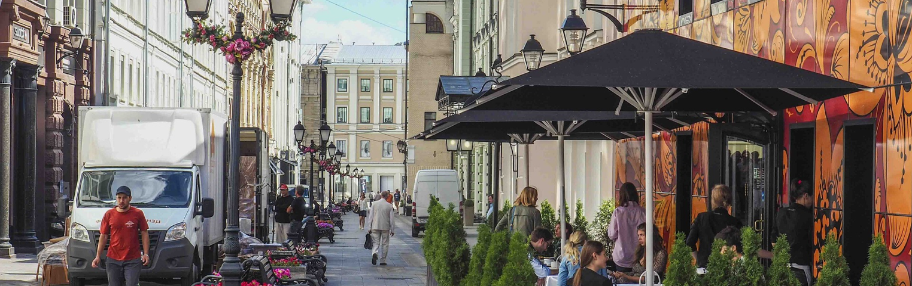
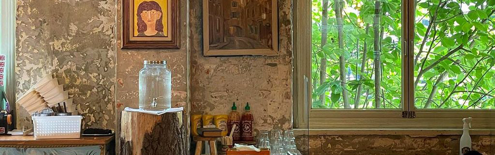

London Bagel Museum
-

- 
- 
-

-


베이글과 감성이 만나는 공간, 런던 베이글 뮤지엄에서만 만나볼 수 있는 특별한 굿즈 컬렉션을 소개합니다.
소중한 일상에 감성을 더할 다양한 굿즈를 지금 만나보세요!
Discover a variety of goods that add warmth and emotion to your precious daily life!


1. 구입하신 베이글을 구매하신 당신 당일이나 다음날 안에 드실 예정이면 지퍼백에 담아 실온 보관해 주세요! (감자, 단호박 베이글은 냉장 보관)
2. 베이글을 더 오랜 기간 보관할 경우, 지퍼백에 담아 냉동 보관해 주세요! (2주까지 가능) 지퍼백에 이중으로 담아 보관 시 냉동실 냄새가 빵에 흡수되지 않고 촉촉한 상태로 오래 먹을 수 있습니다
3. 냉동 보관된 베이글은 실온에서 30~40분 자연 해동 후 180도로 예열한 오븐이나 에어프라이어에서 5분 정도 구워드시면 맛있게 드실 수 있습니다! 전자레인지 사용 시 30초 (700W 기준) 정도 데워 맛있게 드셔주세요! 실온에서 1시간 정도 완전히 해동해 준 뒤 그대로 드셔도 맛있습니다!
구매하신 당근 라페와 코울슬로, 크림치즈는 꼭 냉장 보관 해주시고 구매한 날부터 이틀 안에 드세요!
수프는 냉장 보관해주시고 구매한 당일이나 다음 날까지 드셔주세요! 따뜻하게 드시려면 전자레인지 전용 용기에 담아 2분 30초 정도 데우거나 냄비에 데울 시 약불에서 4분 정도 주걱으로 눌어붙지 않게 저어주면서 데워주세요! (데운 수프 위에 치즈나 후추를 뿌려드시면 더 맛있게 드실 수 있어요!)
지점 찾기